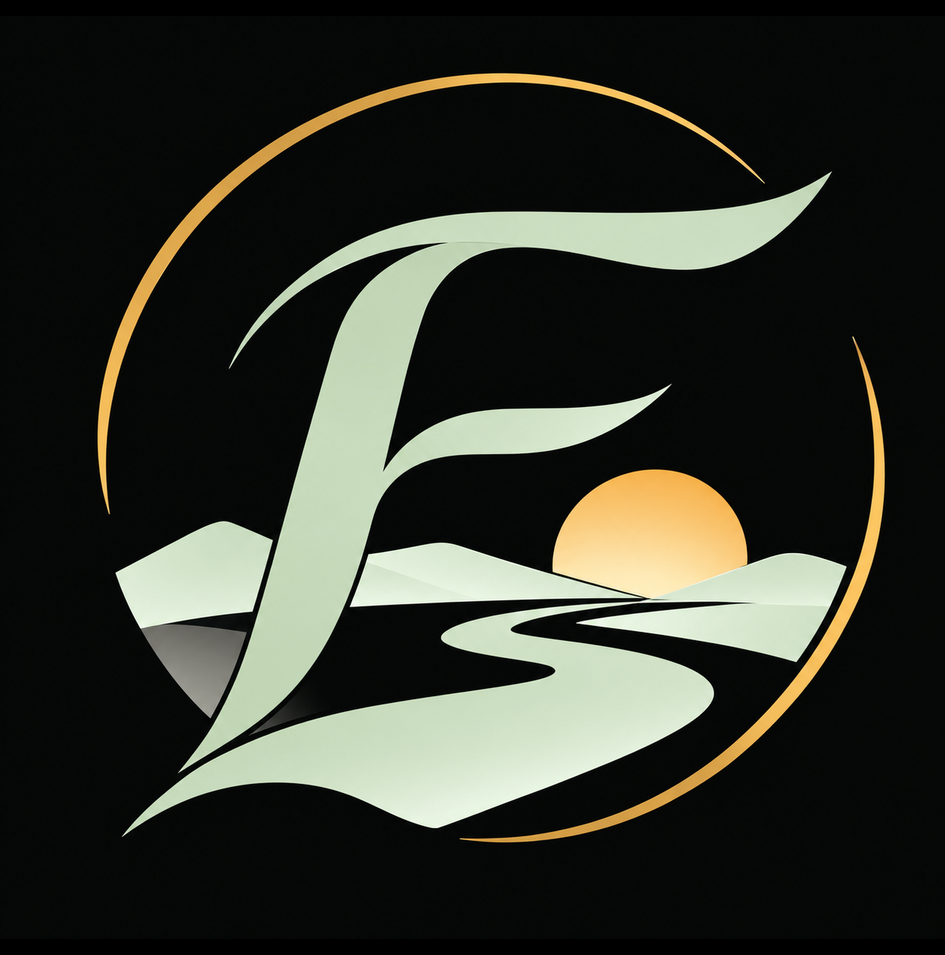

현재 · Freedom
시간의 자유를 얻다
직장 중심의 일상에서 벗어나 스스로 시간을 설계하고 선택할 수 있는 상태.

PERSONAL MOTTO
꿈이 있는 자유.
I have the freedom to shape my time today, and I'm using it to build greater freedom for tomorrow.
오늘은 내 시간을 선택할 자유가 있고, 그 시간을 통해 내일의 더 큰 자유를 만들어간다.
THE JOURNEY
현재 · Freedom
직장 중심의 일상에서 벗어나 스스로 시간을 설계하고 선택할 수 있는 상태.
과정 · In Progress
투자, 학습, 새로운 도전 등을 통해 경제적으로 독립할 수 있는 기반을 구축하는 시간.
미래 · Financial Freedom
생계를 위한 노동에 대한 의존도를 낮추고, 자신의 의지에 따라 삶을 선택할 수 있는 상태.
THE EMBLEM
현재의 자유에서 출발해 성장과 도전을 거쳐 경제적 자유에 이르는 여정. 닫히지 않은 원은 아직 완성되지 않은 미래와 그 가능성을 나타낸다.
01 — SYMBOLISM
가장 중심에 있는 F는 Freedom의 첫 글자다. 단단한 세로획은 스스로 삶의 방향을 결정하는 주체성을, 유려하게 뻗어 나가는 획은 틀에 갇히지 않는 자유로움을 표현한다.
현재의 자유를 출발점으로 삼아 경제적 자유라는 목표를 향해 나아가는 여정을 의미한다. 직선이 아닌 굽은 길에는 굴곡 속에서도 방향을 잃지 않고 전진한다는 뜻이 담겨 있다.
산 너머의 황금빛 태양은 새로운 시작과 미래의 가능성을 상징한다. 모든 것을 이미 이룬 상태보다 앞으로 펼쳐질 삶을 기대하며 준비하는 순간에 가깝다.
겹겹이 펼쳐진 산은 넓은 세상과 자연 속에서 누리는 자유를 나타낸다. 동시에 경제적 독립을 향한 여정에서 마주하는 여러 단계와 도전을 상징한다.

로고를 둘러싼 황금빛 원은 완전히 닫히지 않은 형태다. 자유는 이미 시작되었지만 아직 완성되지 않았으며, 앞으로 더 넓어질 가능성이 열려 있음을 의미한다.
02 — COLOR PALETTE
자유 · 안정 · 독립
성장 · 자연 · 회복
희망 · 성취 · 미래